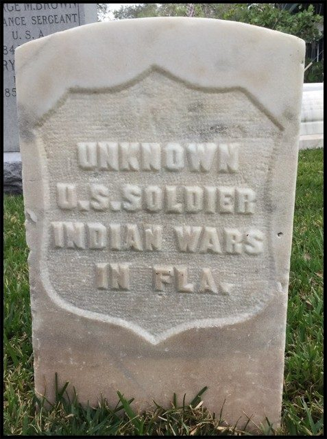
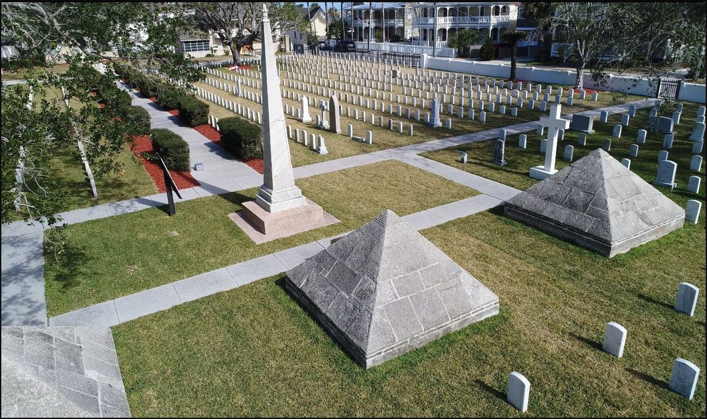
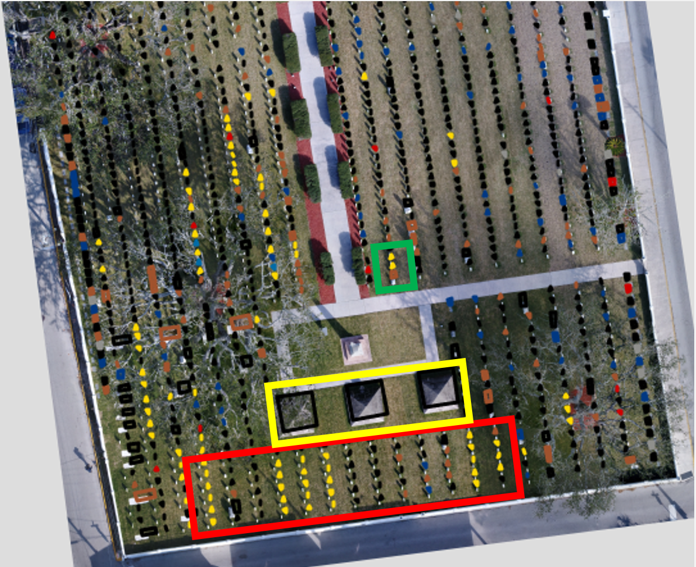
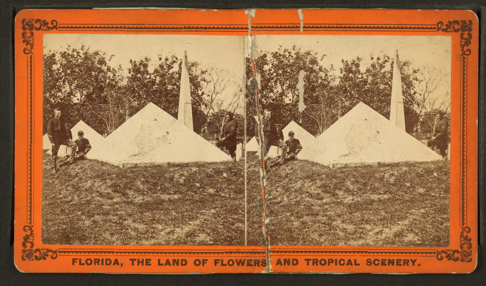

The first episode of the 2024 UCF Veterans Legacy Program Podcast Series features Dr. Amy Giroux's research on recovering the identities of previously unknown Native American prisoners and lost Union soldiers buried in St. Augustine National Cemetery — illuminating the centrality of space and place in veteran memorialization and legacy. Dr. Giroux, co-principal investigator and technical lead for UCF's Veterans Legacy Program, was a keynote speaker at the 2024 UCF VLP Institute. Directed, produced, and hosted by Sebastian Garcia, with Executive Producers Sebastian Garcia and Dr. Amelia Lyons.
Dr. Amy Larner Giroux · Sebastian Garcia · 1 hr. 9 min. · Nov. 2024
The physical exhibit on display, created by graduate and undergraduate students from UCF's History Department.
The groundbreaking work of Dr. Amy Larner Giroux at St. Augustine National Cemetery has reshaped how we understand and commemorate the lives of those buried there. As a genealogist and digital historian, Dr. Giroux combines archival research, digital tools, and fieldwork to recover the identities of individuals long considered "unknown."
At the heart of this project is a commitment to restoring names and stories to those lost to time: Union soldiers from the Civil War misidentified as Indian War casualties, soldiers of the Second Seminole War whose numbers and identities were misunderstood, and Native American prisoners who were buried without recognition.
This exhibit examines how cemeteries are not just places of rest, but landscapes of memory, history, and justice. Each panel explores a different facet of this work, from Civil War soldiers to Native American prisoners, and from archival discoveries to public commemoration. Together, they tell a story of recovery, remembrance, and the power of historical research.
✦
Panel 02 — Civil War
Lost, but not Forgotten: Civil War Soldiers Recovered
This research is not just about correcting the record but restoring names and dignity.
🎙 Audio Narration
Listen to a narrated version of this panel.

A headstone at St. Augustine National Cemetery inscribed "Unknown U.S. Soldier — Indian Wars in Fla." Dr. Giroux's research identified many of these men as Union soldiers from the Civil War, not Indian Wars casualties.
During the Civil War, Union soldiers stationed in St. Augustine faced military threats, disease, and harsh conditions. Many died young and were buried in the local military cemetery. Over time, their wooden grave markers deteriorated in Florida's humid climate, and their names were lost. Later, their graves were mistakenly labeled as casualties of the Indian Wars.
Dr. Amy Larner Giroux's research has corrected this historical error. Using forensic image analysis of a stereograph showing the cemetery in the 1860s, she identified legible names on headboards and matched them to archival records. She then traced regimental histories, military post returns, and burial records to reconstruct the identities of 108 Union soldiers who died in St. Augustine. Her work revealed that many of these men were from New Hampshire regiments and had died of disease while stationed in Florida.
Dr. Giroux has connected these soldiers to over 260 family members through genealogical research. Through this work, the lives of young men like Franklin and William Taylor, brothers who died at 17 and 19, are no longer anonymous.
🔲 3D Model — "Indian War Soldiers" Marker
The grave marker originally inscribed "Indian War Soldiers" — the category under which Civil War Union soldiers were misidentified. Drag to rotate.
From the Exhibit3D Printed Headstone
This 3D printed model is of a headstone that marked the grave of previously unknown Union Soldiers. They were once thought to have been soldiers from the Second Seminole War, hence the inscription. Through her research, Dr. Giroux identified these individuals as Union soldiers from the Civil War.
✦
Panel 03 — Second Seminole War
Second Seminole War: Untangling the Numbers
Historical memory can be shaped by assumptions and misinterpretations. Rigorous historical analysis can recover and preserve legacies.
🎙 Audio Narration
Listen to a narrated version of this panel.
▶

Aerial view of the coquina pyramids and Dade Monument obelisk at St. Augustine National Cemetery. Dr. Giroux's research found that only approximately 140 individuals are actually interred within the pyramids — not the 1,468 long claimed.
The Second Seminole War (1835–1842) left a lasting imprint on Florida's military history. At St. Augustine National Cemetery, three coquina pyramids commemorate soldiers who died during the conflict. A sign claims that 1,468 men are buried within them, but Dr. Giroux's research uncovered a different story.
Using archival documents, newspaper accounts, and military correspondence, Dr. Giroux traced the origins of the pyramids and the men interred within. She discovered that the pyramids were built in 1842, and a record book created two years later listed the names of those who died in the war, not necessarily those buried in the pyramids. After years of searching, she located the original record book in the National Archives, misfiled due to a labeling error.
Her analysis revealed that only about 140 individuals are actually buried in the pyramids. These include members of Dade's command, disinterred from battlefield graves, and others honored for bravery. Many officers listed on the monument were buried elsewhere, including West Point and Jefferson Barracks. Dr. Giroux's work corrects the inflated burial count and clarifies who is truly memorialized in the pyramids.
This research highlights how historical memory can be shaped by assumptions and misinterpretations. By returning to primary sources and applying rigorous analysis, Dr. Giroux has helped ensure that the legacy of those who served in the Second Seminole War is accurately preserved.
🔲 3D Model — Coquina Pyramid
One of the three coquina pyramids at St. Augustine National Cemetery. Dr. Giroux's research found only ~140 individuals are actually interred within them — not the 1,468 claimed on the sign. Drag to rotate.
🔲 3D Model — Dade Monument Obelisk
The Dade Monument obelisk, commemorating Major Francis Dade and his command, killed in the opening engagement of the Second Seminole War. Drag to rotate.
Note: high-resolution model — may take a moment to load on slower connections.
From the Exhibit3D Printed Monuments
Dr. Giroux's research corrected the record on the number of men buried under the pyramids, showing that 140 men are buried there, not over 1,400 as had long been thought. These 3D representations of the Dade Pyramids and Monument are scale models created by Amy E. Giroux.
✦
Panel 04 — Native American Prisoners
Restoring Native American Identities
Dr. Giroux recovered the names of nine previously unknown Native Americans who were incarcerated in St. Augustine.
🎙 Audio Narration
Listen to a narrated version of this panel.
▶

Aerial map of St. Augustine National Cemetery with color-coded burial markers. Red rectangle — Civil War soldiers mismarked as Indian Wars casualties. Yellow rectangle — Dade's Pyramids; Dr. Giroux is identifying who is actually buried within them. Green square — Unknown Native Americans (12 individuals).
In 1875, 72 Native American prisoners, leaders from Plains tribes, were forcibly relocated to Fort Marion (now Castillo de San Marcos) in St. Augustine. Their imprisonment was part of the U.S. Army's strategy during the Red River War to suppress resistance and enforce reservation policies. Nine of these men died during their captivity and were buried in St. Augustine National Cemetery, their graves marked only as "six unknown Indians."
Dr. Giroux's research has brought their identities back to light. Through archival work in the National Archives, the Beinecke Library at Yale, and the Peabody Museum at Harvard, she uncovered correspondence, death records, and oral histories that identified the deceased. Her collaboration with tribal representatives from the Cheyenne, Arapaho, Kiowa, Comanche, and Caddo nations has been central to this work.
This partnership has led to public ceremonies, educational materials, and plans for interpretive signage at the cemetery. Rather than replacing headstones, the tribes have chosen to "retell" the story, honoring their ancestors while acknowledging the historical context. Dr. Giroux's work has also helped descendants, including UCF students, reconnect with their heritage.
This project shows the resilience of these Native communities and the importance of restoring names and stories to those erased by history. This research is a testament to how public history can serve both truth and healing.
In light of this research, the cemetery is scheduled to add new interpretive signage that honors all the Native prisoners held there, and list the nine who are buried in the cemetery by name, tribe, and date of death.
From the ExhibitShawl
The Cheyenne and Arapaho Tribes of Oklahoma gifted this traditional shawl to Dr. Giroux as a symbolic way to express their gratitude for her extensive help through research. She provided names for the "Six Unknown Indians," uncovering details of their time as prisoners of war during the Plains Wars in the 1800s. This allowed the descendants to perform a proper ceremony to assist the deceased's spirits with a safe journey in the afterlife.
From the ExhibitFolded Flag
Dr. Giroux was presented with the flag that flew over St. Augustine National Cemetery. The flag was flown on November 15, 2023, in memory of the warriors who died in captivity in St. Augustine during the Plains Indians Incarceration.
✦
Panel 05 — Methods
Mapping Memory: Digital Humanities in Action
Interdisciplinary methods enhance public history, making cemeteries not just places of mourning, but dynamic sites of research, education, and remembrance.
🎙 Audio Narration
Listen to a narrated version of this panel.
▶

Stereoscopic view of the Pyramids of Major Dade and the Dade Monument obelisk, from the Robert N. Dennis collection of stereoscopic views. Images like this were used by Dr. Giroux and UCF computer science students to reconstruct burial locations through image forensics.
Dr. Giroux's work exemplifies the power of digital humanities to transform historical research. As a digital historian for the National Cemetery Administration, she pioneered methods for digitizing cemetery landscapes. Using GPS transponders, drones, and LiDAR scanners, she created detailed maps of St. Augustine National Cemetery, capturing the spatial relationships between monuments and graves.
One of her most innovative and interdisciplinary projects involved a stereographic photograph of the cemetery. With help from UCF computer science students, she used image forensics to measure distances and reconstruct burial locations. This allowed her to place temporary headboards at the exact spots where Union soldiers were buried, restoring their presence in the landscape.
Her approach reaches across departments and colleges, combining history, engineering, computer science, anthropology, and genealogy. From drone mapping to archival digitization, Dr. Giroux's work shows that technology is not just a tool but a core part of how historians ask new questions and tell deeper stories.
From the ExhibitStereoscopic Viewer
Stereoscopic viewers, like this one patented in 1897, enabled users to see images in 3D. The viewer looked through the eyepiece at two nearly identical images that the brain registers as a single 3D image. UCF Computer Science students used these images to compute the location of the original grave markers in the photos.
✦
Panel 06 — Public History
Public History: Connecting Past and Present
At the core of Dr. Giroux's work is a simple but profound goal: restoring people's names. As a certified genealogist, she has traced the lives of over 100 U.S. Army soldiers and dozens of Native American prisoners, connecting them to hundreds of descendants. Her research is not just about the past, but also about how history impacts the living.
Through collaboration with Native tribes, public educators, and the National Cemetery Administration, Dr. Giroux's work has led to new forms of commemoration. Interpretive signage, educational tours, and classroom materials now tell the stories of those once considered "unknown." Her research, which reaches across disciplines and departments, has inspired students, like those in UCF's computer science program, to engage with history in meaningful ways.
If you are interested in getting involved in research like this, consider one of the History Department's many internships available to undergraduate students. If you want to continue your studies, UCF's History M.A. program and Texts & Technology Ph.D. program both offer concentrations in Public History and compelling opportunities to dive into interdisciplinary research.
A Story Worth Telling
[ Placeholder — additional story to be added by Dr. Giroux. ]
In the News
Dr. Giroux's research has been covered by regional and national outlets, and published in peer-reviewed academic journals. Selected coverage is listed below.
Distributed through the American Association for the Advancement of Science's news wire, bringing the research to a national scientific and academic audience.
In-depth student journalism piece featuring interviews with Dr. Giroux, tribal representatives, and National Park Service staff.
Acknowledgements
This exhibit project showcasing Dr. Giroux's research was created by a team of graduate and undergraduate students: Christopher Alfonso, Danielle Crosby, Kailey Freeman-Depelisi, Jordan Kearschner, and Eric Thompson.
This opportunity would not have been possible without the materials and support provided by the UCF History Department, the Center for Humanities and Digital Research (CHDR), and UCF Phi Alpha Theta.